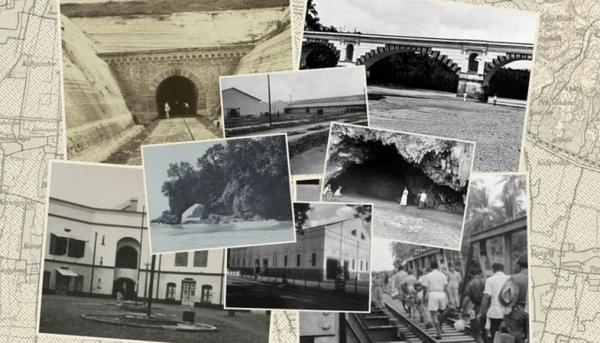

Lebih Dekat
dengan Kebumen.
Sebuah perjalanan mengenal tanah yang menyimpan cerita sejarah, tradisi yang terus hidup, serta keindahan alam dari pesisir selatan hingga kawasan perbukitan.
MULAI MENJELAJAH
Tempat yang terus bercerita.
Kabupaten Kebumen berada di bagian selatan Jawa Tengah dan dikenal dengan perpaduan kawasan pesisir, perbukitan, pedesaan, serta ruang-ruang budaya yang masih hidup di tengah masyarakat.
Melalui website ini, Kebumen tidak hanya dikenalkan sebagai kumpulan tempat untuk dikunjungi. Setiap destinasi, makanan, kesenian, dan jejak sejarah dipandang sebagai bagian dari cerita yang saling terhubung.
Dari Panjer, warisan sejarah, sampai Kebumen hari ini.
Sejarah Kebumen dapat dikenali melalui jejak kota, bangunan peninggalan, cerita masyarakat, dan perubahan ruang yang terus berlangsung. Di saat yang sama, budaya seperti Ebleg, Tari Lawet, Cepetan Alas, dan batik menjadi pengingat bahwa cerita daerah bukan hanya masa lalu, tetapi juga sesuatu yang terus bergerak.
Kenali bukan hanya tempatnya, tetapi ceritanya.
Pantai Menganti, Goa Jatijajar, Waduk Sempor, Geopark Kebumen, kuliner khas, dan berbagai kesenian lokal menunjukkan sisi Kebumen yang beragam. Jelajah Kebumen dibuat agar informasi tersebut terasa dekat, mudah ditemukan, dan menyenangkan untuk dipelajari.
Gunakan halaman utama untuk memilih kategori, mencari cerita, lalu buka detail setiap tempat untuk mengenal informasi lebih jauh.